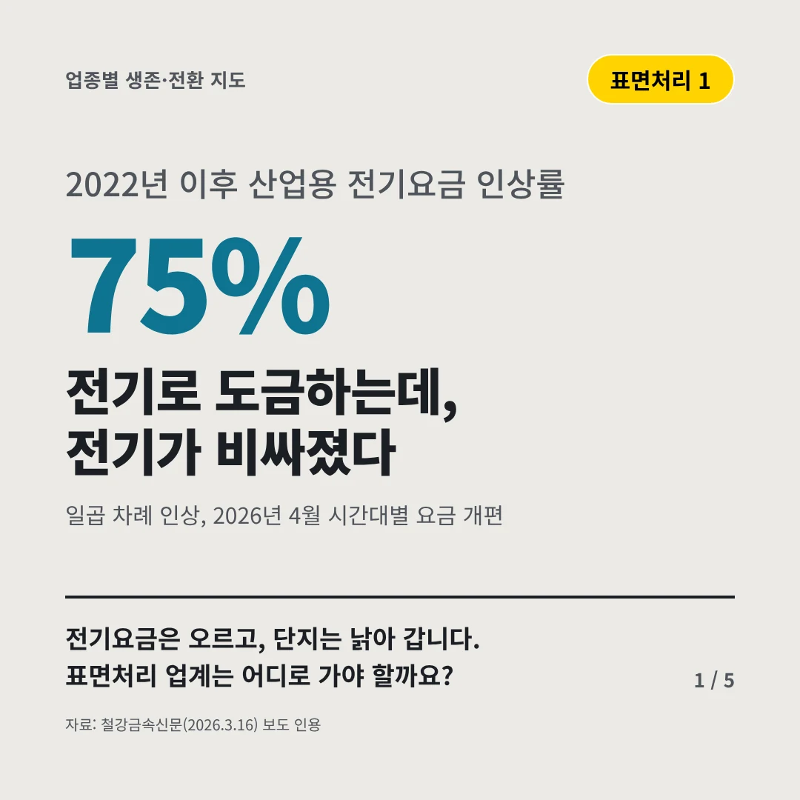
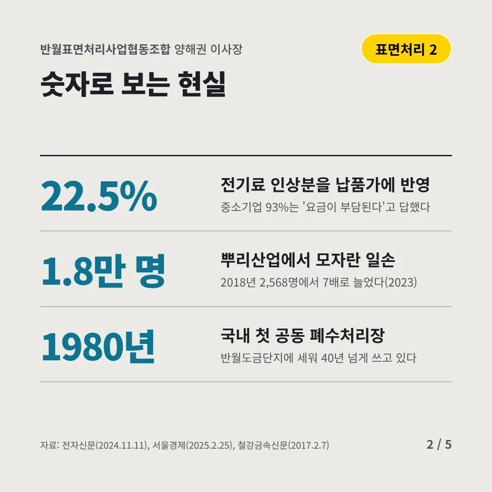
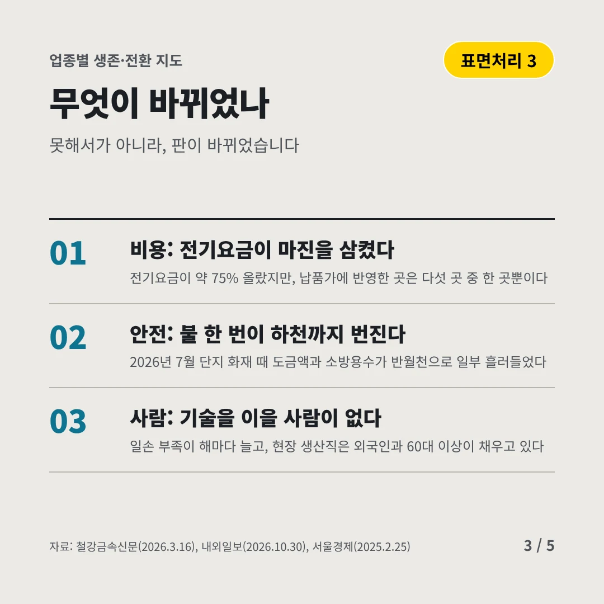
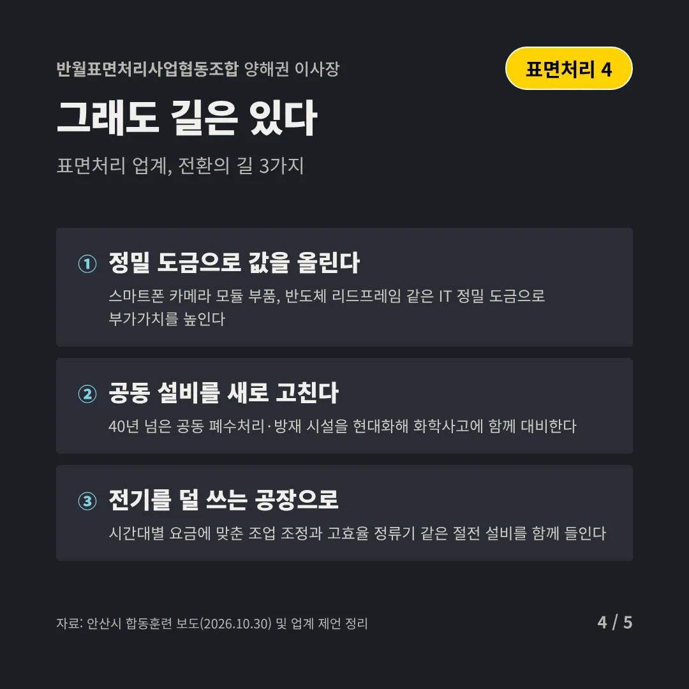
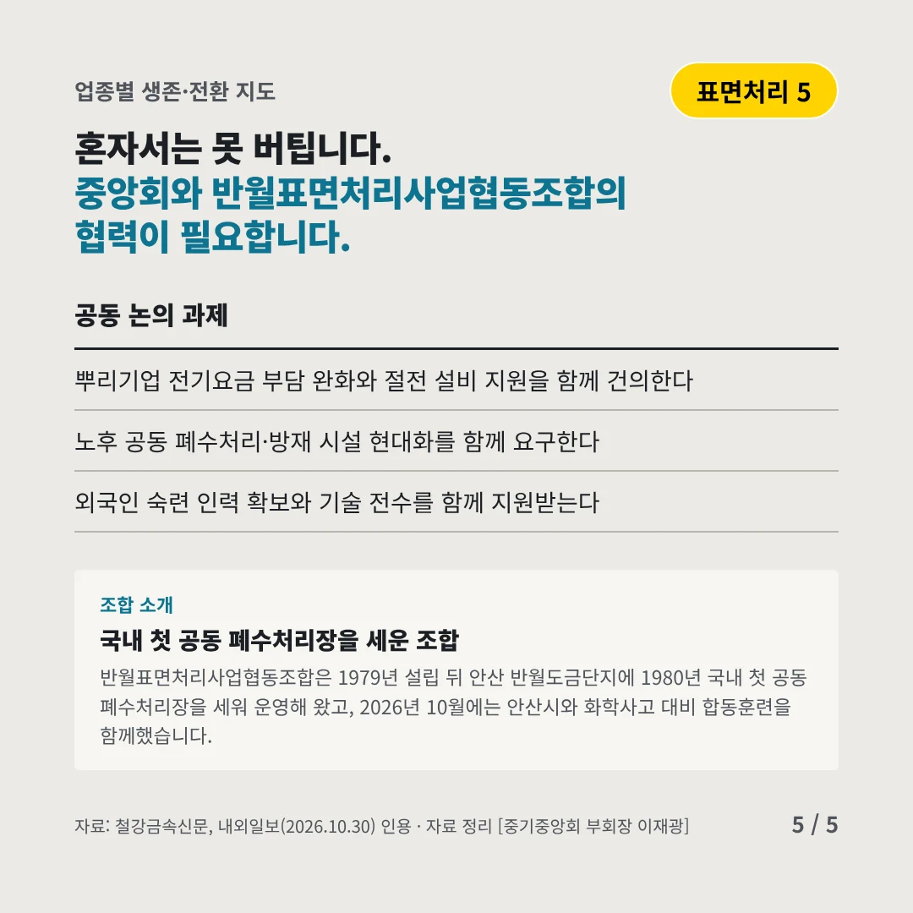
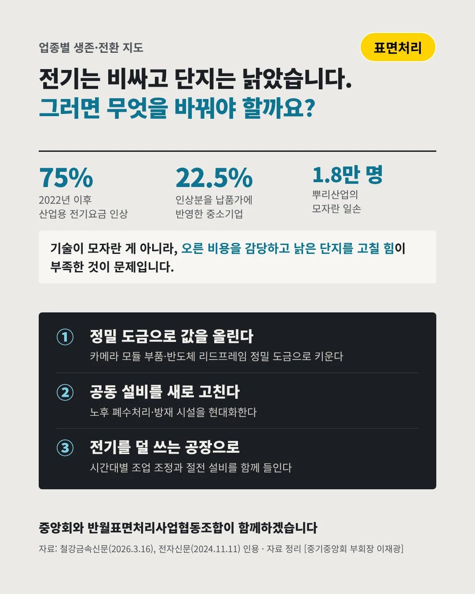

반월표면처리사업협동조합
전기로 도금하는데, 전기가 비싸졌다
75% 2022년 이후 산업용 전기요금 인상률






전기요금은 오르고, 단지는 낡아 갑니다. 표면처리 업계는 어디로 가야 할까요?
숫자로 보는 현실
- 22.5%전기료 인상분을 납품가에 반영중소기업 93%는 '요금이 부담된다'고 답했다
- 1.8만 명뿌리산업에서 모자란 일손2018년 2,568명에서 7배로 늘었다(2023)
- 1980년국내 첫 공동 폐수처리장반월도금단지에 세워 40년 넘게 쓰고 있다
무엇이 바뀌었나
- 비용: 전기요금이 마진을 삼켰다전기요금이 약 75% 올랐지만, 납품가에 반영한 곳은 다섯 곳 중 한 곳뿐이다
- 안전: 불 한 번이 하천까지 번진다2026년 7월 단지 화재 때 도금액과 소방용수가 반월천으로 일부 흘러들었다
- 사람: 기술을 이을 사람이 없다일손 부족이 해마다 늘고, 현장 생산직은 외국인과 60대 이상이 채우고 있다
그래도 길은 있다
- 정밀 도금으로 값을 올린다스마트폰 카메라 모듈 부품, 반도체 리드프레임 같은 IT 정밀 도금으로 부가가치를 높인다
- 공동 설비를 새로 고친다40년 넘은 공동 폐수처리·방재 시설을 현대화해 화학사고에 함께 대비한다
- 전기를 덜 쓰는 공장으로시간대별 요금에 맞춘 조업 조정과 고효율 정류기 같은 절전 설비를 함께 들인다
한 장 요약

조합 소개
반월표면처리사업협동조합은 1979년 설립 뒤 안산 반월도금단지에 1980년 국내 첫 공동 폐수처리장을 세워 운영해 왔고, 2026년 10월에는 안산시와 화학사고 대비 합동훈련을 함께했습니다.
자료: 철강금속신문(2026.3.16), 전자신문(2024.11.11), 서울경제(2025.2.25), 철강금속신문(2017.2.7), 내외일보(2026.10.30), 안산시 합동훈련 보도(2026.10.30)